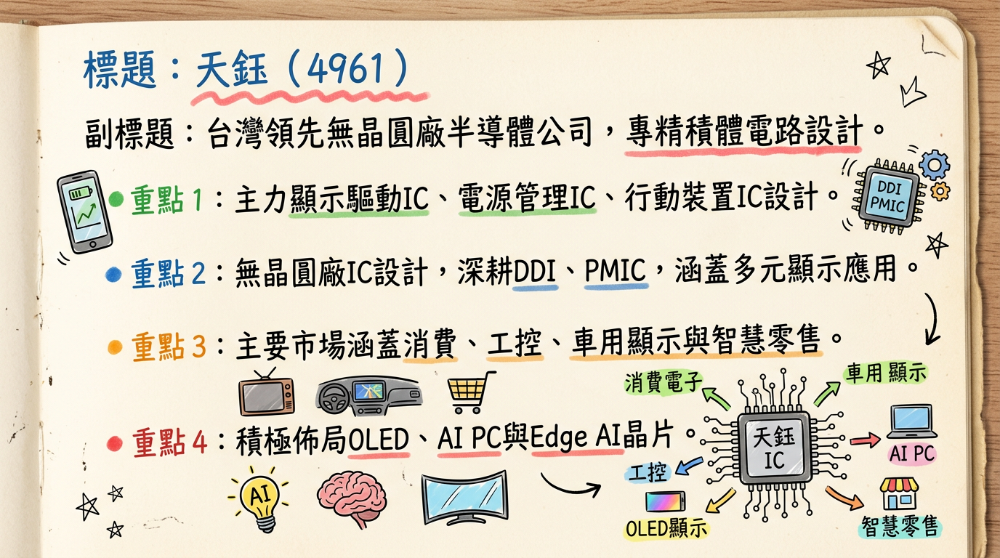
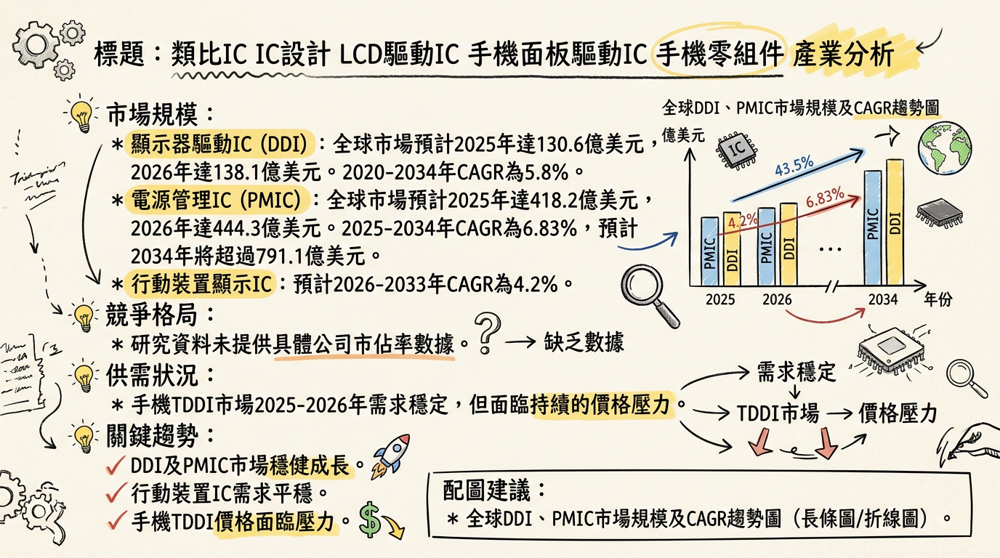
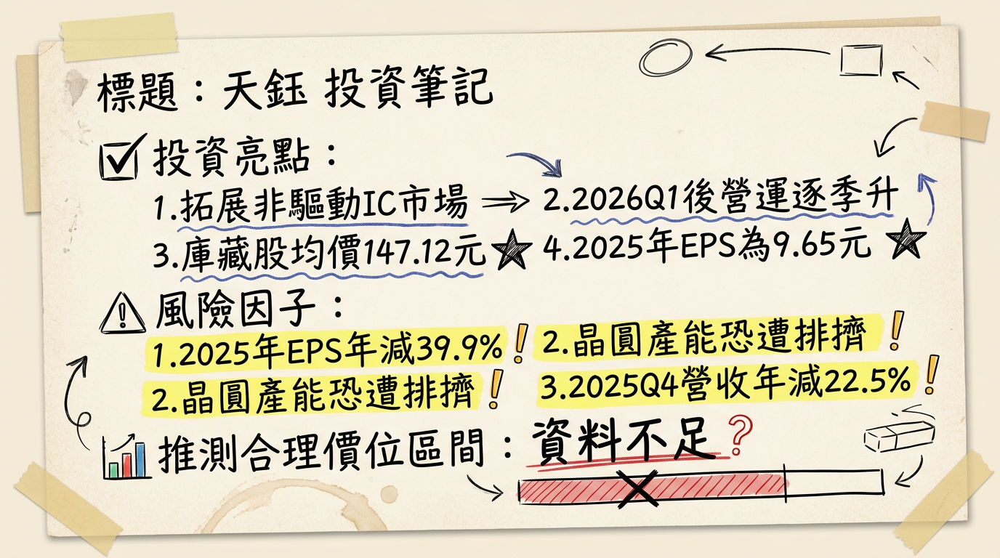

天鈺（4961）正處於轉型關鍵期，2025年獲利承壓，然積極布局非驅動IC產品線，特別是AIoT、ESL與高整合PMIC，預期在2026年帶動營運逐季回溫，挑戰非驅動IC營收佔比突破五成，儘管短期面臨8吋晶圓產能排擠與DDI市場競爭壓力，但長期成長動能明確。
天鈺科技（4961）是一家台灣領先的無晶圓廠（Fabless）半導體公司，主要從事積體電路設計業務。
公司主要業務與核心產品/服務：| 產品線分類 | 營收佔比 |
|---|---|
| Mobile IC | 34.87% |
| 其他相關半導體 | 31.87% |
| 顯示器驅動IC | 21.67% |
| 電源管理IC | 11.57% |
| 總計 | 100% |
| 月份 | 金額 (新台幣億元) | 月增率 (MoM) | 年增率 (YoY) |
|---|---|---|---|
| 2026年02月 | 13.23 | -1.77% | -10.35% |
| 2026年01月 | 13.47 | -3.04% | -3.17% |
| 2025年12月 | 13.89 | +4.29% | -20.19% |
| 2025年11月 | 13.32 | +7.12% | -23.22% |
| 2025年10月 | 12.44 | -10.27% | -26.65% |
| 2025年09月 | 13.86 | -1.37% | -22.26% |
| 項目 | 2024年Q4 | 2025年Q2 | 2025年Q3 | 2025年Q4 |
|---|---|---|---|---|
| 季營收 (新台幣億元) | 51.46 | 50.76 | 42.71 | 39.84 |
| 季增率 (QoQ) | - | +8.91% | -15.86% | -6.73% |
| 年增率 (YoY) | - | - | - | -22.5% |
| 毛利率 | 26.60% | 28.63% | 28.14% | 27.76% |
| 營業利益 (新台幣億元) | 4.90 (估算) | 4.95 | 2.63 | 0.89 |
| 營業利益率 | 9.52% | 9.75% | 6.15% | 2.23% |
| EPS (新台幣元) | 3.80 | 2.62 | 1.99 (估算) | 1.57 |
| 年度 | 項目 | 數字 (新台幣) | 變動 |
|---|---|---|---|
| 2024年 | 全年營收 | 191.9974 億元 | - |
| 全年 EPS | 16.08 元 | - | |
| 2025年 | 全年營收 | 179.93 億元 | 年減 6.28% |
| 全年 EPS | 9.65 元 | 較2024年下滑 | |
| 2026年 | 預估年度稅後純益 | 13.87 億元 | 預期較2025年成長 |
| 預估 EPS | 11.33 ~ 11.59 元 (2026/03/03) | 預期較2025年成長 |
* 電源管理IC (PMIC)： 2026年Q1將推出支援Apple PD3.2標準高整合快充協議IC；eDP PMIC打入歐美新客戶並量產；DDR5 PMIC導入DRAM品牌客戶並放量；筆電LTPS面板PMIC Q1放量；Q2電視與顯示器產品將導入可免散熱設計PMIC。
* 行動裝置 (Mobile)： AMOLED DDI出貨量持續放大，同步布局下一代產品；TDDI朝家電與數位顯示發展，已進入家電大廠驗證，Q2將推出多款含RAM的TDDI產品 (QHD、HD、Full HD)。
* 其他半導體 (AIoT, Edge AI)： 鎖定2026年成長引擎為AI SoC與邊緣運算晶片。AIoT晶片聚焦智慧白電、生物辨識、AI玩具、AI數位裝置，延伸至機器人、無人機等邊緣運算應用。新一代IoT晶片將導入更先進製程。新一代ESL IC已放量，支援六色顯示。筆電eDP 1.5省記憶體T-Con打入一線品牌；電競顯示器T-Con切入QHD主流市場。
| 券商名稱 | 目標價 (新台幣) | 評等 | 日期 |
|---|---|---|---|
| 三家券商 | 150 ~ 166 元 | 中立 | 未明確標示發布日期 |
| 項目 | 2024年Q4 | 2025年Q1 | 2025年Q2 | 2025年Q3 | 2025年Q4 | 2025年全年 |
|---|---|---|---|---|---|---|
| 毛利率 | 26.60% | 29.31% | 28.63% | 28.14% | 27.76% | 28.50% |
| 營業利益率 | 9.52% | - | 9.75% | 6.15% | 2.23% | 7.42% |
| 稅後淨利率 (估算) | 8.94% | - | 9.54% | 7.98% | 6.45% | 9.04% |
| EPS (新台幣元) | 3.80 | - | 2.62 | - | 1.57 | 9.65 |
| 項目 | 2024年Q4 | 2025年Q1 | 2025年Q2 | 2025年Q3 | 2025年Q4 |
|---|---|---|---|---|---|
| 存貨金額 (新台幣億元) | - | - | 23.33 | - | - |
| 存貨週轉率 (次) | 1.55 | 1.24 | 1.40 | 1.33 | - |
| 存貨週轉天數 (天) | 58.12 | 72.56 | 64.15 | 67.44 | 拉長 |
| 項目 | 2024年Q4 | 2025年Q1 | 2025年Q2 | 2025年Q3 | 2025年Q4 |
|---|---|---|---|---|---|
| 應收帳款週轉率 (次) | 1.60 | 1.42 | 1.65 | 1.41 | - |
| 應收帳款收現天數 (天) | 56.11 | 63.21 | 65.81 | 63.86 | 拉長 |
| 日期 | 身份 | 張數 | 方式 |
|---|---|---|---|
| 2025年12月19日 | 經理人蔡坤憲 | 260 | 信託 |
| 宣布日期 | 執行期間 | 預計買回張數 | 實際買回張數 | 買回總金額 (新台幣) | 平均買回價 (新台幣) | 目的 | 佔已發行股數比率 |
|---|---|---|---|---|---|---|---|
| 2026年01月05日 | 2026/01/06-03/05 | 1,500 | 1,500 | 220,678,034 | 147.12 | 轉讓股份予員工 | 1.24% |
| 年度 | 現金股利 (新台幣元/股) | 股票股利 (新台幣元/股) | 除息日 | 現金發放日 | 盈餘配發率 (估計) | 現金殖利率 (估計) |
|---|---|---|---|---|---|---|
| 2024年 | 10.64 | 0 | 2024年06月27日 | 2024年07月26日 | - | - |
| 2025年 | 12.87 | 0 | 2025年07月01日 | 2025年07月25日 | 約八成 | 約6.1% (以2025/04/01收盤價210.5元計) |
| 產業細分 | 2024年市場規模 | 2025年市場規模 | 2026年市場規模 | 預估 CAGR (區間/年限) |
|---|---|---|---|---|
| 顯示器驅動IC (DDI) | - | 130.6億美元 | 138.1億美元 | 5.8% (2020-2034) |
| 電源管理IC (PMIC) | 408.6億美元 | 418.2億美元 | 444.3億美元 | 6.83% (2025-2034) 或 6.3% (2026-2034) |
| 行動裝置IC (Mobile DDI) | - | - | - | 4.2% (2026-2033) |
* 大尺寸DDI 2025年需求平穩，供應充足，但終端需求不明朗，供應鏈備貨保守。
* LCD電視DDIC 2025年需求預計年減6.6%，受4K+高解析度面板出貨低於預期及DRD/TRD技術影響。
* IT應用DDI (NB、Monitor、Tablet) 2025年預計年增3%，受全球經濟不確定性影響。
* 智慧手機DDI (中小尺寸) 2025年預計年減5%，長期穩定。
* 手機TDDI 2025-2026年需求穩定但面臨價格壓力；AMOLED DDI需求隨滲透率提升而增長。
* AI應用驅動PMIC需求激增，帶動8吋晶圓代工產能吃緊，華虹、中芯國際、世界先進等8吋廠產能利用率接近滿載 (超過95%)，預計2026年Q4仍維持高檔 (94-100%)，已醞釀零星漲價。
* PMIC市場2025年呈現緩步回溫的態勢。
| 公司名稱 | 營收規模 (新台幣億元) | 毛利率 | EPS (新台幣元) | 產品主要類別 |
|---|---|---|---|---|
| 天鈺 (4961) | 179.93 (2025全年) | 28.50% | 9.65 | DDI, PMIC, AIoT, ESL |
| 瑞鼎 (3592) | 224.0 (2025全年) | 28.50% | 18.24 | OLED/LCD DDI |
| 致新 (8081) | 55.50 (2024前8月) | 40.00% (2024Q2) | 4.28 (2024Q2) | PMIC, 放大器, 溫度感測 |
* 具體影響： AI伺服器和AI PC的興起，對高效能、高電流密度的PMIC需求顯著增加，亦帶動散熱風扇馬達IC市場。
* 具體影響： OLED面板在智慧手機、平板、筆記型電腦、電視以及車用顯示等領域的滲透率持續提升，推動AMOLED驅動IC的需求增長。低價版本的Ramless AMOLED驅動IC成為主流，同時隨著面板廠8.6代線產能陸續開出，平板、筆電與顯示器導入OLED面板的趨勢明確，帶動IT OLED DDI與T-COM產品逐步放量。
* 具體影響： 電動車和混合動力車的快速普及，推動了對高電流、高效率電源管理IC（PMIC）的需求。汽車電子被認定為PMIC增長最快的細分領域。車用顯示器對DDI的需求也日益增加，且車用相關產品享有較長的產品週期，有助於廠商長期營運貢獻。
* AI相關PMIC需求： PMIC佈局有機會切入AI PC、AI伺服器等高效能電源管理晶片市場。
* 車用電子領域發展： 車用DDI與PMIC投入，受惠電動車及車用電子市場穩健成長。
* ESL市場成長： ESL IC已開始放量，支援六色顯示，智慧零售市場持續成長。
* 傳統LCD應用需求趨緩： LCD電視DDI需求下降，平板DDI疲軟，影響傳統DDI業績。
* 8吋/12吋晶圓產能排擠： 記憶體需求回升已排擠DDI在8吋晶圓產能，未來可能延伸至12吋，影響出貨。
* 全球經濟不確定性： 關稅政策與經濟環境不穩定，影響消費電子市場前景，進而影響整體IC需求。
| 時間 | 事件 | 成長動能 | 備註 |
|---|---|---|---|
| 2025年Q2 | 第一代AIoT晶片進入規模量產 | Edge AI晶片市場 | 智慧白電、生物辨識、AI玩具等應用 |
| 2025年Q2 | 非驅動IC營收佔比提升至43% | 產品組合優化、非DDI成長 | 目標2026年突破五成 |
| 2025年Q3 | 新一代ESL IC開始放量 | 電子貨架標籤 (ESL) 市場擴張 | 支援六色顯示技術 |
| 2026年Q1 | 推出支援Apple PD3.2高整合快充協議IC | 快充市場、PMIC高整合趨勢 | 將多項外部元件整合至單一晶片 |
| 2026年Q1 | eDP PMIC導入歐美新客戶量產 | PMIC新客戶/市場擴展 | 筆電eDP應用 |
| 2026年Q1 | DDR5 PMIC導入記憶體品牌客戶並放量出貨 | DDR5市場、PMIC應用 | 受惠DDR5升級潮 |
| 2026年Q1 | 筆電LTPS面板用PMIC放量出貨 | LTPS面板應用、PMIC市場擴展 | |
| 2026年Q1 | 家電/數位顯示TDDI進入家電大廠驗證 | 家電TDDI新市場 | 搶食白色家電市場 |
| 2026年Q1 | 筆電eDP 1.5省記憶體T-Con打入一線品牌 | T-Con市場、一線品牌客戶 | 筆電應用趨勢 |
| 2026年Q1 | 電競顯示器T-Con切入QHD主流市場 | T-Con市場、電競應用 | |
| 2026年Q2 | 電視/顯示器產品導入可免散熱設計PMIC | PMIC技術創新、成本優化 | 協助面板廠降低成本 |
| 2026年Q2 | 推出新一代AMOLED PMIC | AMOLED市場、PMIC技術升級 | |
| 2026年Q2 | 開發下一代IoT晶片 (導入更先進製程) | AIoT、Edge AI晶片效能提升 | 瞄準機器人、無人機等邊緣運算 |
| 2026年 | 整體營運預期優於2025年 | 非驅動IC產品線持續擴展 | 營收獲利回升預期 |
| 2026年 | 非驅動IC相關營收比重目標突破五成 | 產品組合轉型成功、多元成長 | |
| 2026年 | Edge AI晶片營收貢獻逐步成長並推次世代 | Edge AI晶片市場 | 邊緣運算應用深化 |
| 長期 | OLED DDI佈局 (手機、TV、NB、平板、車用) | OLED滲透率提升 |
天鈺董事長林永杰預期2026年整體營運將優於2025年，並呈現逐季走升態勢。法人機構平均預估2026年稅後純益將達13.87億元，EPS介於11.33~11.59元，相較2025年9.65元的低點將有顯著回升。
綜合上述分析，天鈺（4961）正處於由傳統DDI廠向多元化IC設計公司轉型的關鍵階段。儘管2025年獲利面臨壓力，但公司積極拓展Edge AI、ESL、高效能PMIC等非驅動IC產品線，為2026年營運成長奠定基礎。
本報告由 AI 自動產生，資料來源為公開網路資訊，僅供參考，不構成投資建議。產生時間：2026-03-06 14:35


